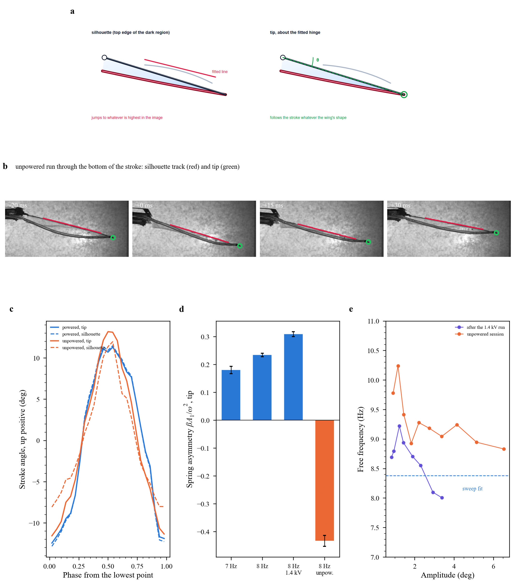
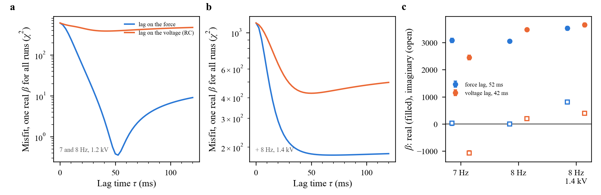
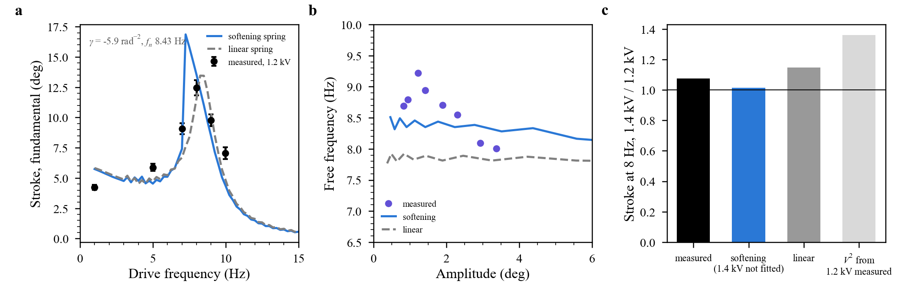
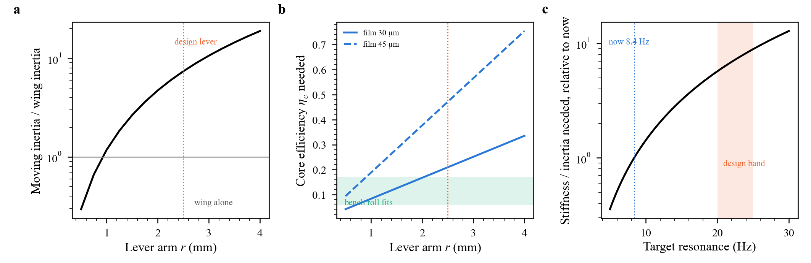
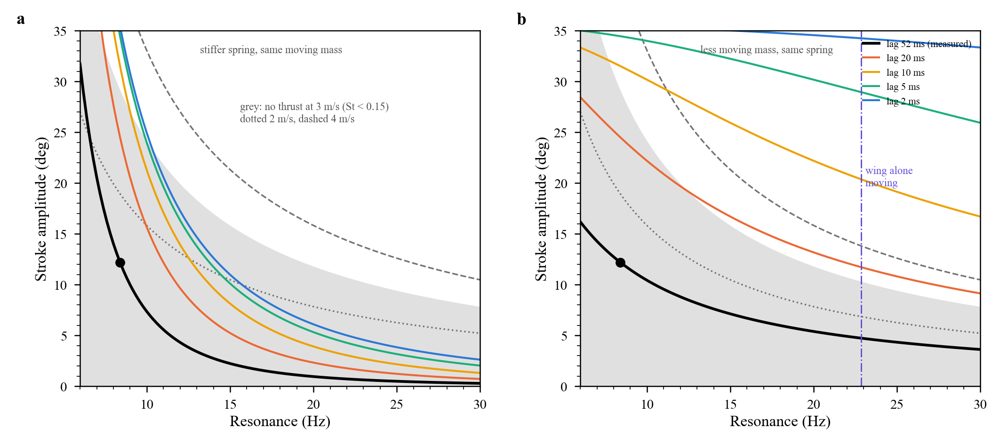
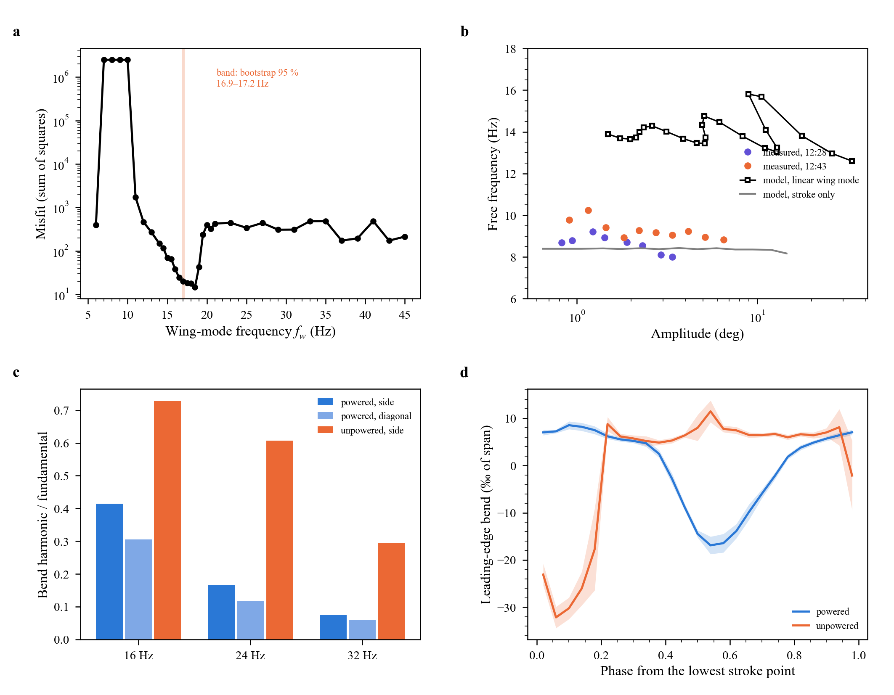

The models behind the B-cube results, what each one explains, and the tests it passes or fails. The robot models are fitted to the high-speed video; each is then tested on data it was not fitted to. Two of them were withdrawn once a measurement error in their data was found; they stay here, with the reason.
Status
Model
Fitted to
Passes
Fails or open
Stroke resonance with force lag
Stroke against frequency, 1200 V
Peak place and height; lag 38 ± 13 ms, like the bench (50 ms)
Peak width: the spring is not linear (below)
Spring asymmetry (harmonic balance), from the tip
2nd harmonic of each run
Powered: one real value (+0.18 to +0.31) at 7–8 Hz and 1.2–1.4 kV; predicts the powered 2nd harmonic
Unpowered: −0.43, not real (a lag at 16 Hz); drift or wing, open
Lag on the force (viscoelastic) against lag on the voltage (RC)
Complex 2nd harmonics of the powered runs
Force lag 52 ms: one real asymmetry at 7 and 8 Hz (misfit 0.3)
Voltage lag: misfit 388 at its best (40 ms); the 1.4 kV run fits neither well
Softening stroke spring (cubic term)
Sweep at 1.2 kV and the free decay
Predicts little gain at 1.4 kV (×1.015 against ×1.075 measured; linear ×1.15, $V^2$ ×1.36); misfit 72 against 95 linear
Overshoots 8 Hz at 1.2 kV by 9 %; the free decay does not need it; predicts a jump near 7.2 Hz, untested
Lever, inertia and core efficiency
Resonance and 1 Hz stroke
One relation between them; at the design lever (2.5 mm) the moving inertia is 7.4 × the wing's and $\eta_c$ 0.21. Needs the built lever
Linear wing mode at 17 Hz; edge tension ≈ 4 mN
Silhouette track of the unpowered run
Withdrawn: its data were a tracking error; it also predicted a second free mode the decays do not show
Asymmetric air drag
Same
Withdrawn: same data; it also missed the phase by 14 s.d.
Measuring the stroke

A line fitted to the top of the wing's silhouette is the stroke only while the spar is the highest dark feature. In the powered run, filmed from below, it is, and silhouette and tip agree. In the unpowered run, filmed from above after the camera was moved and zoomed, a faint feature above the spar takes over near the bottom of the stroke and the fitted line clips the stroke by about 4°. Every model of the unpowered run fitted to the silhouette track inherited that error. The tip, measured about the centre of its own path, cannot switch features; all robot models now use it. With the tip, the two runs have the same stroke (24.4 ± 1.0° and 23.3 ± 1.0°).
Resonance with a lagging force
$\ddot\theta + 2\zeta\omega\dot\theta + \omega^2\theta = G\,u(t)$, $\tau\dot u + u = \sin^4(\pi f t)$ (sine-squared voltage from 0 V, force ∝ $V^2$). Fitted with $\zeta$ = 0.07 from the free decays: $f_n$ 8.38 ± 0.20 Hz, $\tau$ 38 ± 13 ms. The powered runs were filmed from below, where silhouette and tip agree (within 0.6° at 7, 8 and 9 Hz), so this fit stands. The measured peak is about twice as broad as the model's; see the spring below. Results, Fig. 4.
Spring asymmetry from the 2nd harmonic
With a quadratic term $\beta\theta^2$ and the fixed $\sin^4$ drive, the ratio $X_2/X_1^2$ does not depend on when the clock starts, so it gives $\beta$ for each run without a drive signal; it must be real if the model holds. From the tip: powered +0.18 (7 Hz), +0.23 (8 Hz), +0.31 (8 Hz, 1.4 kV), real within the noise, and with this term the model predicts the powered 2nd harmonic. Unpowered: −0.43 ± 0.02, with an imaginary part 5 s.d. from zero, so something lags at 16 Hz. A tense edge pulling the wing more on one side of the stroke would do this; so would a change of the robot between the two sessions, 20 min apart. Results, Fig. 6d.
The lag is in the force, not the voltage

Two kinds of lag give different 2nd harmonics. The drive is $V = V_{max}\sin^2(\pi f t) = V_{max}(1-\cos\Omega t)/2$. If the force lags ($\tau\dot F + F = V^2$, viscoelastic), its harmonics are $-\tfrac12 L_1$ and $\tfrac18 L_2$, with $L_h = 1/(1+ih\Omega\tau)$. If the voltage on the film lags and is then squared (RC charging through the electrodes, or amplifier slew), they are $-\tfrac12 L_1$ and $\tfrac18 L_1^2$. At 8 Hz and 50 ms the two 2nd harmonics differ by about 50° in phase.
Test: for each kind and each $\tau$, solve the spring asymmetry $\beta$ from the measured complex $X_2/X_1^2$ of each powered run (tip-based); the right lag gives one real $\beta$ for all runs.
a: with the two cleanest runs (7 and 8 Hz, 1.2 kV) the force lag gives $\beta$ = 3087 and 3050 s⁻², imaginary parts 18 and 5, at $\tau$ = 52 ms (misfit 0.3), the same lag as the bench (50 ms). The voltage lag never does better than a misfit of 388.
b, c: adding the 1.4 kV run, the force lag is still better (178 against 426), but that run's imaginary part stays at about 800: at larger stroke the spring's stiffness changes with amplitude, which the model does not include.
So: the lag is the elastomer's own force response. Better electrodes or a faster amplifier will not shorten it. Validate with the blocked force of a core at 1–20 Hz, voltage logged.
The spring is not linear, and it is not clear why

Model: $\ddot\theta + 2\zeta\omega\dot\theta + \omega^2(1+\gamma\theta^2)\theta + \beta\theta^2 = G\,u(t)$, force lag 52 ms, $\beta$ from the tip; fitted to the 1.2 kV sweep and the free decay; the 1.4 kV point is left out.
What it gets: $\gamma$ = -5.9 rad⁻² (the spring 26 % softer at a 12° stroke), a broader peak, and almost no gain from 1.2 to 1.4 kV at 8 Hz (c): ×1.015 against ×1.075 measured, where a fixed spring with $V^2$ forcing gives ×1.36. So the "saturation" at 1.4 kV needs no end stop: a stronger drive softens the spring and moves the resonance below 8 Hz.
What it misses: it overshoots 8 Hz at 1.2 kV by 9 % and predicts a jump between two branches near 7.2 Hz (a), which a single upward sweep cannot show.
The free decay does not decide: fitted in the time domain, a constant frequency (8.64 Hz) leaves an rms of 0.36°, amplitude softening 0.34° and a stiffness recovering after the drive stops (voltage softening) 0.32°: all within the tracking noise. The rise of the frequency read from zero crossings (8.0 to 9.2 Hz) is within that noise too.
Test: sweep 6–10 Hz upward and downward at 1.2 kV (a softening spring gives different strokes near 7–7.5 Hz), and repeat at 0.8 kV: if the resonance moves with voltage at the same stroke, the elastomer softens with voltage; if it moves with stroke at the same voltage, with amplitude.
What the robot says about its lever, inertia and cores

Equations: two cores of axial stiffness $k_c$ = 276 N/m (Yeoh fit, 565 mg, 20 mm) through a lever $r$ give $k_\theta = 2k_c r^2$; the resonance gives the moving inertia, $I = k_\theta/(2\pi f_n)^2$; the quasi-static stroke at 1 Hz (fundamental 4.22° at 1.2 kV, sine-squared drive, lag 52 ms) gives the core's force drop, $F_{pk} = 2\theta_1 k_\theta/(r\,\ell)$, and its efficiency $\eta_c = F_{pk}/(\varepsilon (V/H)^2 A_c)$, $A_c$ = 25.7 mm².
a, b: with the design lever, 2.5 mm, the moving inertia must be 7.4 times the wing's and the cores must lose 214 mN at 1.2 kV ($\eta_c$ 0.21 with 30 µm film): something besides the wing moves with the stroke (crank, frame, cables), which is why the design model, with the wing alone, predicted 22.8 Hz. With the wing alone moving, the lever would be about 1 mm and $\eta_c$ 0.08, close to the bench roll fits (0.06–0.17).
c: 20 Hz needs 5.7 times more stiffness per inertia than now, 25 Hz 8.9 times: a stiffer spring core, less moving mass at the hinge, or a longer lever (which costs stroke as $1/r$ for the same core force).
To close it: the lever arm as built, and a pluck of the transmission without the wing (its own inertia). With $r$ known, the core's $\eta_c$ follows directly from the video.
What B-cube needs to make thrust: a faster actuator, then a faster stroke

Model: from the measured point (12.2° amplitude at 8.4 Hz, 1.2 kV), same cores, voltage and damping ratio; a stiffer spring scales the static stroke as $(f_0/f_r)^2$, less moving mass keeps it; the lag passes $1/\sqrt{1+(2\pi f\tau)^2}$ of the force. Thrust needs $St = f\,2R\sin\Phi/U \ge 0.15$ (Fig. 8), $R$ = 55 mm.
a: stiffening the spring never works: the static stroke falls faster than the threshold, whatever the lag.
b: removing moving mass works only with a faster actuator. With the measured 52 ms lag, the robot stays below the thrust threshold at every frequency (black). With the wing alone moving (22.9 Hz, from the calibration above), it reaches thrust at 3 m/s if the lag is 10–20 ms or less, and at 4 m/s if it is about 10 ms or less.
So: the force lag, set by the elastomer (see Lag), is the first limit to flight, before frequency and before energy per cycle. Shortening it 3–5 times is the first design target; it is a material choice (a less lossy silicone, a different pre-stretch), not wiring.
Limits: linear scaling from one operating point; the softening spring and the air load at higher frequency are not included.
Withdrawn: the wing mode and the asymmetric drag

What they were: a 17 Hz wing mode coupled to the stroke, fitted to five numbers of the unpowered run, and from it an edge tension of about 4 mN through the bench edge model; and an asymmetric air drag.
Why they are withdrawn: their five numbers came from the silhouette track of the unpowered run, which is not the stroke near its lowest point. The "snap" of the leading edge (c, d) is the same tracking error: the tracker jumping between the spar and a feature above it.
They also failed on their own terms: the wing mode predicted a free decay at 12–16 Hz (b); the decays show one mode, 8.7–9.4 Hz, with less than 5 % of their energy between 15 and 25 Hz. The drag model missed the phase of the 2nd harmonic by 14 s.d.
The spar does not bend at these frequencies
The carbon leading edge is a cross of two 1.5 × 0.2 mm strips: $EI = E(w^3t + wt^3)/12 \approx 7\times10^{-3}$ N m² with $E$ = 130 GPa. As a 50 mm cantilever carrying 23–170 mg, its first bending mode is $f_1 = \frac{1.875^2}{2\pi}\sqrt{EI/(\mu L^4)}$ = 330–900 Hz. Any "bend" seen at 8–32 Hz is the membrane or the rolled edge, not the spar.
Next
The test that decides the shape question: one session, fixed camera, wing switched on and off every 10 s at 8 Hz, tip tracked, drive LED in view. The model to test then is the stroke with an edge moment $M_e(\theta, T)$ that depends on the edge tension $T$, with $T$ lowered by voltage; the bench edge model (Fig. 3) gives $T(V)$.
The membrane's own motion: the trailing edge and the membrane between the spar and the edge, tracked separately from the tip, give the wing's twist over the stroke, which the time model (Wing in air) predicts.
Wing and flight models
Edge on the bench: two springs in parallel, edge tension and skin, fitted to finite elements of the built wing (correlation 0.93): Results, Fig. 3; details on the Robot page.
Wing in air: finite elements with a vortex lattice (steady), and a time model with an unsteady lattice: Wing in air, Results, Fig. 7.